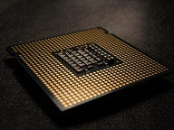

Processorn även kallad CPU är en komponenet som man sätter dirket på moderkortet.
Processorn är den kompnent som gör massa uträckningar till datorn. Processorn är
en stor del av datorn så om du tex ska spela på din dator behöver du en bättre
och större processor som kan ta emot fler uträcnkingar och genomföra de snabbare.
Men ifall du tex bara ska använda din dator till att surfa på internet så
behöver du inte en lika stor processor. Processorn är en komponent som kan blir varm lätt
och därför brukar den ha en fläkt kopplat till den som kyler ner den. Processorer jobbar olika snabbt ju snabbare
processorn jobbar desto fler beräkningar klarar den av att gör men den blir också
varmare snabbare då och då behövs fler fläktar kopplat till den. Processorn
behöver kylpasta emellan sig och fläkten för att hjälpa till att kyla ner Processorn.
Vissa processorer kan behöva ha många fläktar för att kunna kyla ner den.

Här är en bild på en processor utan fläckt.